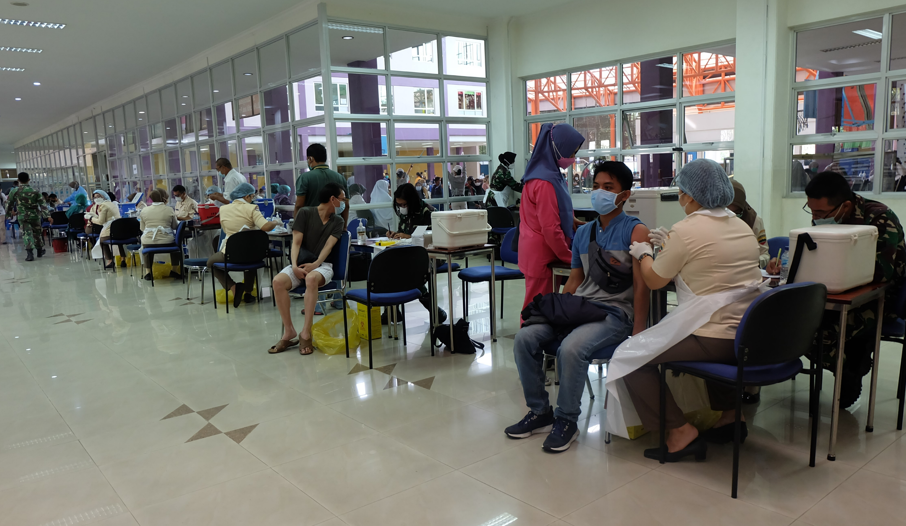
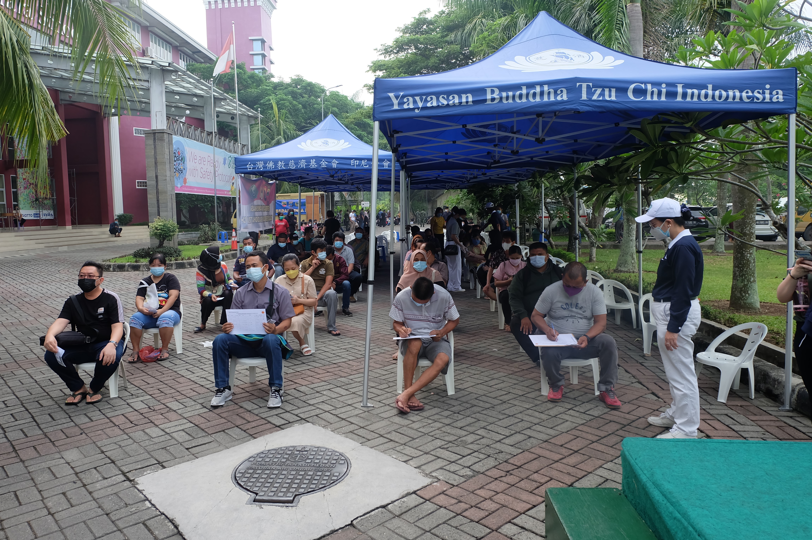
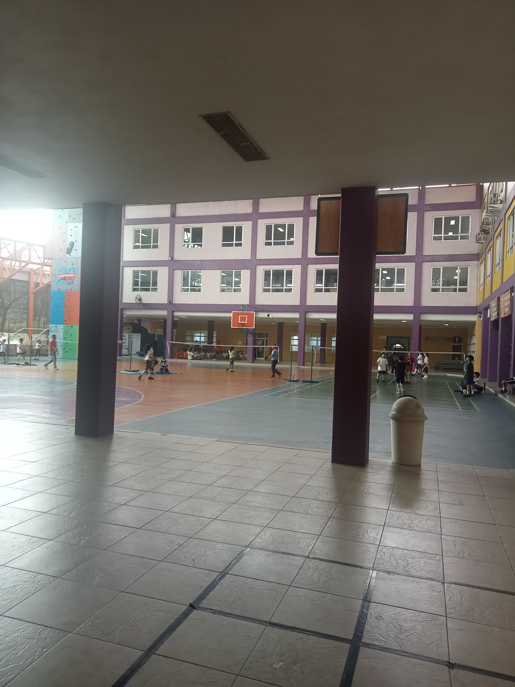
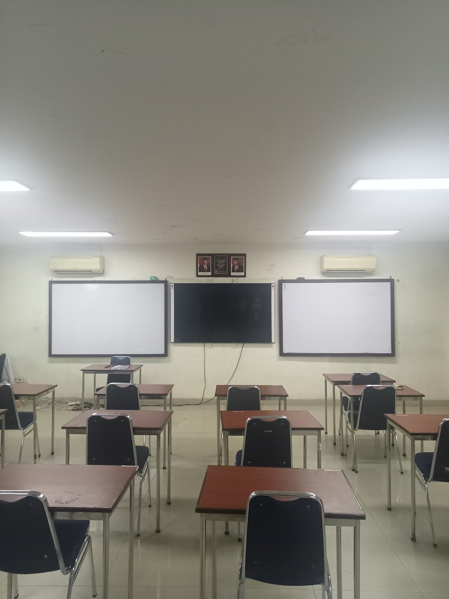
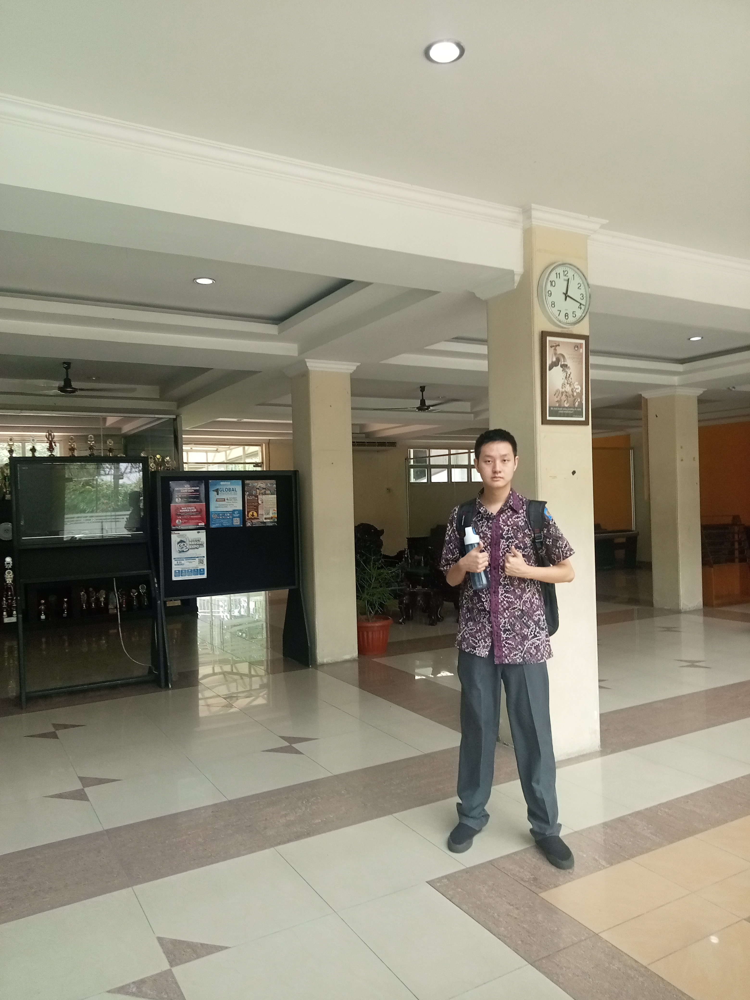
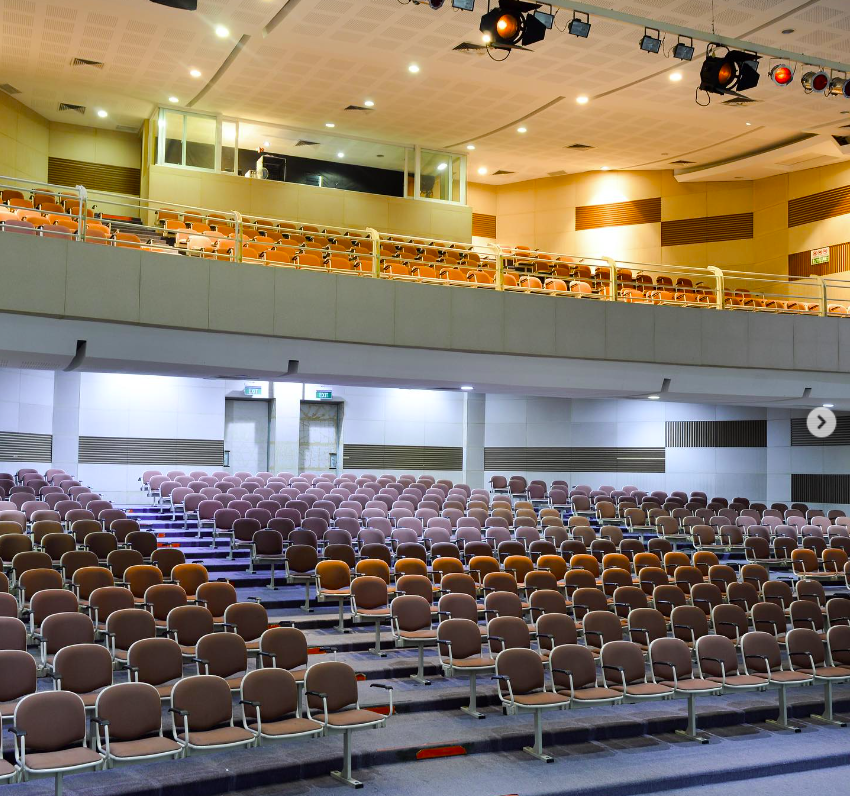
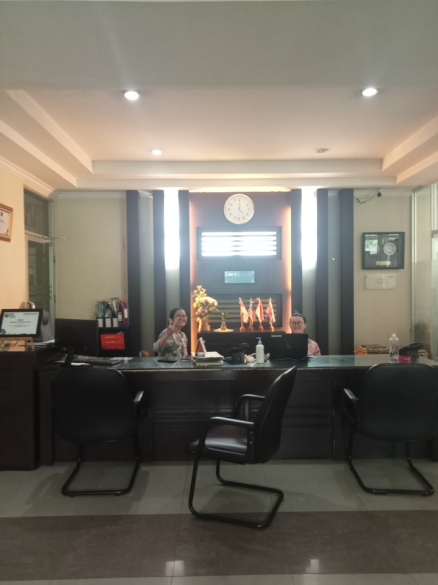
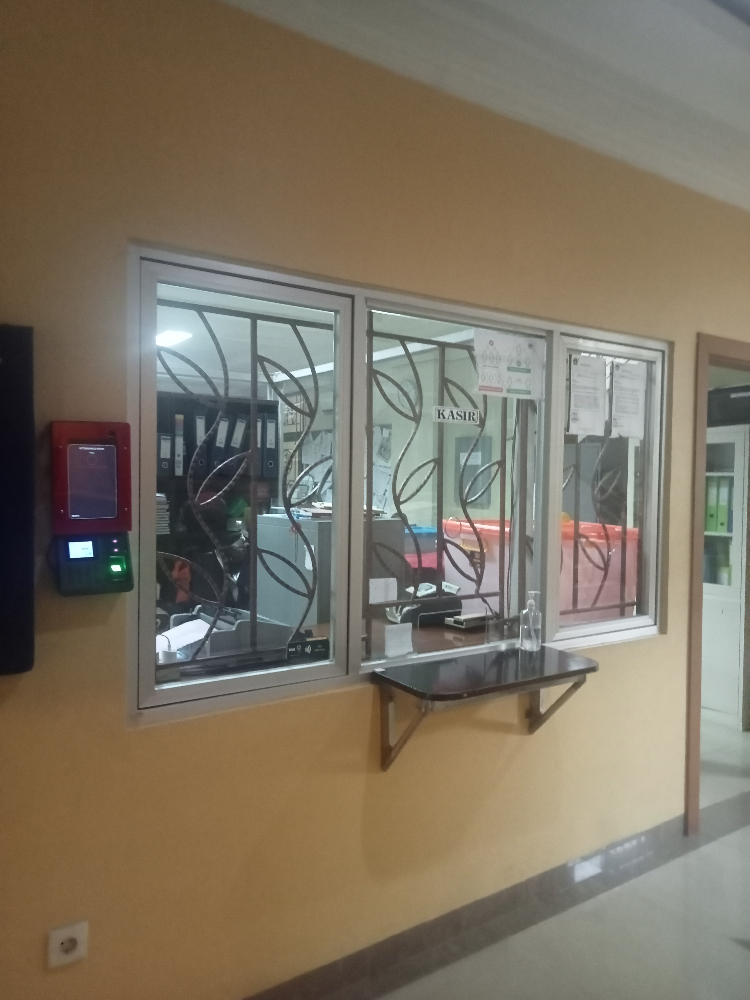
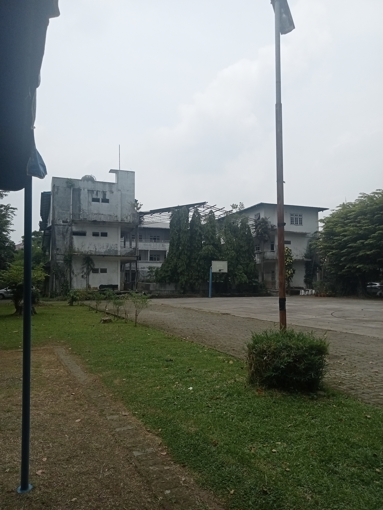
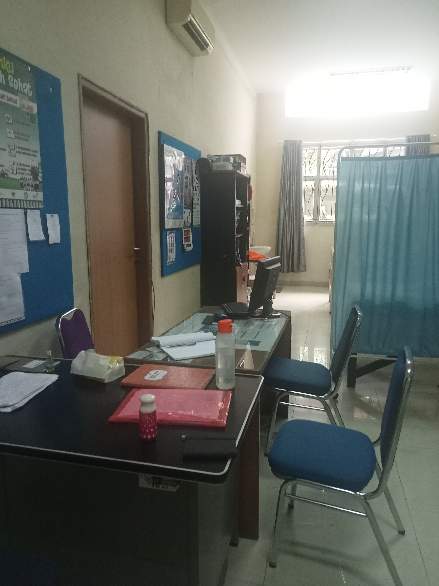

Sejarah Sekolah
Dulunya sekolah ini disebut sekolah chandra kusuma school merupakan sekolah swasta, menyediakan Kelas TK, SD, SMP, SMA. di masa tahun 2006-2016, namanya diganti menjadi Chandra kumala School. secara rinci selama saya menepati sekolah di usia 8 tahun atau kelas SD 3, disana kami mengenakan pakian berbeda terutama remaja dan sd. di masa sd kita sering mengunakan kemeja kuning tua. berbeda dengan smp dan sma yang mengenakan baju biru polos atau lainnya.saat injak di usia 9 tahun, semua siswa dikenakan mengunakan baju putih dan celana biru dan smp serta sma mengunakan baju grey dan celana berbeda, di masa smp anda akan mengenakan celana pendek hitam, sementara jika usai menginjak di masa sma anda akan mengenakan celana hitam panjang. Namun seiring waktu chandra Kumala menyediakan berbagai acara yang menarik terutama charity, suka menolong sekolah lain. sampai hingga ini. Untuk lebih detail silahkan baca dibawah ini.
Anda telah memasuki web situs saya selama di chandra kumala school, Anda dapat melihat, mendengar dan merasakan bahwa CKS adalah tempat di mana siswa dapat merasa nyaman dan aman, tempat yang penuh kegembiraan dimana inovasi, kreativitas, dan pembelajaran dapat berkembang
Menyaksikan anak-anak terlibat dalam pembelajaran langsung, sering kali berbicara dalam bahasa Inggris secara alami, menunjukkan kreativitas mereka, berpartisipasi dalam diskusi siswa yang mendalam dan mendalam, dan mengamati pertumbuhan mereka sehari-hari adalah sumber kegembiraan bagi saya dan bagi semua guru dan staf luar biasa yang menjadi bagiannya. dari komunitas CKS yang dinamis.
Mari jelajahi situs dan buka pikiran untuk menemukan lebih banyak lagi tentang apa yang dapat kami tawarkan kepada siswa, dan hubungi kami untuk mengetahui lebih lanjut, lebih baik lagi, bergabunglah dengan kami untuk hari terbuka, atau buatlah janji untuk datang dan mengunjungi kami.
Berbagai Fasilitas yang dimiliki Chandra Kumala school.
Dalam sekolah swasta chandra kumala school terdapat berbagai fasilitas yang menarik di pengalaman saya selama di sekolah itu, setidaknya hal ini yang saya ketahui selama sekolah di chandra kumala school berikut:
Bazar
Library

Outdoor
Garden
Court
Kelas
Lobby
Auditorium

Kantin
Adminstrasi
Cashier
Gudang
UKS
Berbagai Kenangan selama di sekolah Chandra Kumala.
Selama disekolah banyak hal kenangan kanak-kanak, dari bermain berbagai bidang olahraga,mulai dari menyediakan program athletic di masa SD 5 sampai SD 6, di sana kita sering sekali menghabiskan waktu berlari di lapangan basket setauku, 5 kali putaran. di sana saya mengikuti program atheltic dan berteman dengan kawanan sana. setiap harinya melakukan hal yang sama sampai saat injak masa smp. rata-rata teman atheltic saya pindah sekolah dengan alasan lainnya. seketika itu juga program atheltic di hentikan, hanya di masa smp saya mulai berkeliaran di sekolah atau hanya duduk di bangku sekolah untuk memikirkan sesuatu.
Di masa smp saya pernah mengikuti berbagai lomba terutama lomba makan keripik tanpa memegangnya. aku diajak dan ikut melakukannya, bukan hanya itu para guru di sekolah sangar baik dalam menjaga siswa-siswi di sekolah, terkadang sering sekali bercanda bersama muridnya.